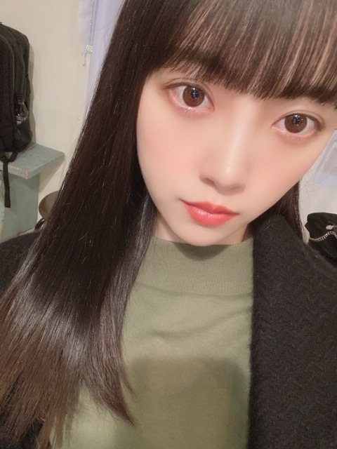
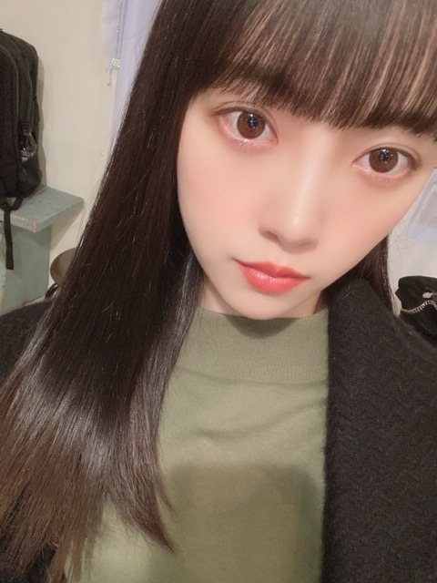

2020/0419Sun#未央奈のおすすめ映画 をご紹介します
皆さんおうち時間
どのようにお過ごしですか？
少しでも早くいつも通りの
日常が戻ってきますように...
当たり前が当たり前ではないこと
感謝しなくてはいけないことを
今回改めて感じました
お身体には気をつけてください!
堀はゲームと映画(ドラマアニメ)を
行き来しています
あと、語学もこの機会に
学ぼうかなって思ったりしてます
語学に詳しい友達に助けてもらいながら
自主勉強頑張ります
はやく字幕無しで見れたらいーな
基本アウトドア派なので
こんなにもおうちにいた事は無くて
でもインドアも悪くないなって
思い始めています
料理も極めよう

こんばんちゃ


私が乃木坂の衣装で1番お気に入りの
2018年紅白歌合戦のブルーのドレスを
デザインしてみました〜
カワイイ
髪型は家にいる時のわたし風
前髪はピンでいつもとめています
さて
私がおすすめする
今見るべき映画
見るべきドラマ
聞くべき曲
のうちの、"映画"
について今日はお話ししようと思います☺︎
いくつかあるのですが
映画 邦画ver
5選しました
" ぼくは明日昨日のきみとデートする "
原作も映画も大好きでDVDも持っています
タイトルの意味が映画を見終わった後に
しっくりくる恋愛の話なのですが
君の名は。みたいな恋愛ストーリーに
異空間要素が詰まった話も好きで
この作品も、
どうしようもない状況で試される2人の愛が
切なくもあり綺麗で、何回観ても泣けます
サントラや映像全体の淡さも好きです
例えば恋人じゃなくても友達や
家族など大好きで大切な人といれる時間って
本当に当たり前じゃないと思うんです
だからこそ気づかなきゃいけない事
言わなくちゃいけない事がたくさんあって
今を生きる人に後悔をしてほしくないので、
そんな意味も込めてこの作品を紹介します
" 海街diary "
是枝監督の作品が好きで
海街diaryが1番お気に入りです
とある姉妹、家族の話で
四季を感じながら進んでいく
日常のお話しなのですが
何となく自己嫌悪に陥っていて
心がぽっかりとあいていたときに
たまたま出会った作品でして
この作品の登場人物の生き方に
踠いてる姿に勇気づけられました
何だかんだ夢のある違う世界の話よりも
わたしが求めているものは日常を切り取った
現実的なお話です
そんな作品達を好きになった理由は、
多分、1番大切なことは日常、
日々の生活の中に潜んでいるんだと思っていて
それを馬鹿なわたしは見落としていたり
どうしても違うもの遠くのものに
目を向けがちで
そんな自分に気づいてからは
人間臭い人間の話を見るのが
自分を救う手段の1つになっていました
もちろん夢が詰まったキラキラした話も好きです
女の子はずっと夢を見たいから。
でも、自分自身の価値を忘れない為に
どうして生きているのか強く再認識する為にも
ヒューマンストーリーは欠かせないです
だから、ホットギミックに出会えた事は
私の今までの
そしてこれからの人生の中でも
大きな宝物となっています
みなさんに影響を与えた作品も聞きたいな〜
あ、話が逸れてしまいました!
では、次の作品
" 湯を沸かすほどの熱い愛 "
家族とは何か
母とは何か
それぞれの愛の力が大きくて強くて
心がぐわんぐわんと揺さぶられた作品です
私にとっても、母は特別な存在で
母はいつも強くてまっすぐと立っていて
私が小さい頃の母の印象は
涙を見せないし弱音を吐かないし
いつも私たちを優先して見守っていてくれた
"強い母親"でした
でも10代後半で
大切なものを守る為に
強くあろうとしていた母に気づき、
わたしが守ろうって決めた事を思い出した作品です
「お母さん」って凄いんだなって
弱さを脆さを知っても尚、
やはり母は私よりもうんと強くて
尊敬しています
私もいつかはそんな女性になれたらいいなと
" 愛がなんだ "
これもまた恋愛の話ですが
デリバリーの焼き鳥を食べながら見たい作品です
もどかしい関係がそれぞれ続くので
なかなかうまくいかない恋模様は
観ていて学ぶことが多くて...
それでいてキャラクターもそれぞれ濃いし
周りにいそうだし自分の中にももしかしたら
潜んでいるかもしれないし
観終わった後は一言で「こうだったよね！」
と言えるわけではなくて観た友達と数時間は
じっくり話したくなる、そんな作品です
哀れだなぁとかかっこ悪いなぁとか
客観的に観てるから思うけど
自分だってそんな感じなんですよね、結局笑
だからかっこ悪くても自分に正直に
生きていかなくちゃなんです
"海がきこえる"
ジブリ作品はどれも好きなのですが
今回の映画のラインナップの流れで
1番ジブリの中でヒューマンドラマみの
強いこの作品を選びました
1人の女の子と男の子が出会い
いろんなことが起こっていく話で
ぜひ、夏の夜に観てほしい作品です
結構女の子が自由気ままで男の子を
振り回すナチュラル小悪魔タイプの子なのですが
この作品に似た洋画で「最低で最高のサリー」
っていう作品のサリーもそのタイプで
そんな女の子を私はどうも庇ってしまうんですよね
でも、まっすぐな恋愛もいいけど
ついたり離れたりのもどかしい関係も
観ていて私は好きですね
番外編
わたしから女の子におすすめしたい作品
" 勝手にふるえてろ "
" シンデレラストーリー "
" アメリ "
" ヘイフラワーとキルトシュー "
" シェイプオブウォーター "
" 愛がなんだ "
" 彼女がその名を知らない鳥たち "
ぜひに!
よかったら観て観てください☺︎
#未央奈のおすすめ映画
でぜひ感想をお聞かせください✨
外食ができないので
お家でサムギョプサル作りました!

肉の塊を焼いてから切ってまたちゃんと焼いて
キムチも焼いて ごま油に塩をいれて...
美味しかったー。
これを深夜に食べたので胃もたれしたこと以外は
100点でした!
でははは
皆さんおうち時間
どのようにお過ごしですか？
少しでも早くいつも通りの
日常が戻ってきますように...
当たり前が当たり前ではないこと
感謝しなくてはいけないことを
今回改めて感じました
お身体には気をつけてください!
堀はゲームと映画(ドラマアニメ)を
行き来しています
あと、語学もこの機会に
学ぼうかなって思ったりしてます
語学に詳しい友達に助けてもらいながら
自主勉強頑張ります
はやく字幕無しで見れたらいーな
基本アウトドア派なので
こんなにもおうちにいた事は無くて
でもインドアも悪くないなって
思い始めています
料理も極めよう

こんばんちゃ
私が乃木坂の衣装で1番お気に入りの
2018年紅白歌合戦のブルーのドレスを
デザインしてみました〜
カワイイ
髪型は家にいる時のわたし風
前髪はピンでいつもとめています
さて
私がおすすめする
今見るべき映画
見るべきドラマ
聞くべき曲
のうちの、"映画"
について今日はお話ししようと思います☺︎
いくつかあるのですが
映画 邦画ver
5選しました
" ぼくは明日昨日のきみとデートする "
原作も映画も大好きでDVDも持っています
タイトルの意味が映画を見終わった後に
しっくりくる恋愛の話なのですが
君の名は。みたいな恋愛ストーリーに
異空間要素が詰まった話も好きで
この作品も、
どうしようもない状況で試される2人の愛が
切なくもあり綺麗で、何回観ても泣けます
サントラや映像全体の淡さも好きです
例えば恋人じゃなくても友達や
家族など大好きで大切な人といれる時間って
本当に当たり前じゃないと思うんです
だからこそ気づかなきゃいけない事
言わなくちゃいけない事がたくさんあって
今を生きる人に後悔をしてほしくないので、
そんな意味も込めてこの作品を紹介します
" 海街diary "
是枝監督の作品が好きで
海街diaryが1番お気に入りです
とある姉妹、家族の話で
四季を感じながら進んでいく
日常のお話しなのですが
何となく自己嫌悪に陥っていて
心がぽっかりとあいていたときに
たまたま出会った作品でして
この作品の登場人物の生き方に
踠いてる姿に勇気づけられました
何だかんだ夢のある違う世界の話よりも
わたしが求めているものは日常を切り取った
現実的なお話です
そんな作品達を好きになった理由は、
多分、1番大切なことは日常、
日々の生活の中に潜んでいるんだと思っていて
それを馬鹿なわたしは見落としていたり
どうしても違うもの遠くのものに
目を向けがちで
そんな自分に気づいてからは
人間臭い人間の話を見るのが
自分を救う手段の1つになっていました
もちろん夢が詰まったキラキラした話も好きです
女の子はずっと夢を見たいから。
でも、自分自身の価値を忘れない為に
どうして生きているのか強く再認識する為にも
ヒューマンストーリーは欠かせないです
だから、ホットギミックに出会えた事は
私の今までの
そしてこれからの人生の中でも
大きな宝物となっています
みなさんに影響を与えた作品も聞きたいな〜
あ、話が逸れてしまいました!
では、次の作品
" 湯を沸かすほどの熱い愛 "
家族とは何か
母とは何か
それぞれの愛の力が大きくて強くて
心がぐわんぐわんと揺さぶられた作品です
私にとっても、母は特別な存在で
母はいつも強くてまっすぐと立っていて
私が小さい頃の母の印象は
涙を見せないし弱音を吐かないし
いつも私たちを優先して見守っていてくれた
"強い母親"でした
でも10代後半で
大切なものを守る為に
強くあろうとしていた母に気づき、
わたしが守ろうって決めた事を思い出した作品です
「お母さん」って凄いんだなって
弱さを脆さを知っても尚、
やはり母は私よりもうんと強くて
尊敬しています
私もいつかはそんな女性になれたらいいなと
" 愛がなんだ "
これもまた恋愛の話ですが
デリバリーの焼き鳥を食べながら見たい作品です
もどかしい関係がそれぞれ続くので
なかなかうまくいかない恋模様は
観ていて学ぶことが多くて...
それでいてキャラクターもそれぞれ濃いし
周りにいそうだし自分の中にももしかしたら
潜んでいるかもしれないし
観終わった後は一言で「こうだったよね！」
と言えるわけではなくて観た友達と数時間は
じっくり話したくなる、そんな作品です
哀れだなぁとかかっこ悪いなぁとか
客観的に観てるから思うけど
自分だってそんな感じなんですよね、結局笑
だからかっこ悪くても自分に正直に
生きていかなくちゃなんです
"海がきこえる"
ジブリ作品はどれも好きなのですが
今回の映画のラインナップの流れで
1番ジブリの中でヒューマンドラマみの
強いこの作品を選びました
1人の女の子と男の子が出会い
いろんなことが起こっていく話で
ぜひ、夏の夜に観てほしい作品です
結構女の子が自由気ままで男の子を
振り回すナチュラル小悪魔タイプの子なのですが
この作品に似た洋画で「最低で最高のサリー」
っていう作品のサリーもそのタイプで
そんな女の子を私はどうも庇ってしまうんですよね
でも、まっすぐな恋愛もいいけど
ついたり離れたりのもどかしい関係も
観ていて私は好きですね
番外編
わたしから女の子におすすめしたい作品
" 勝手にふるえてろ "
" シンデレラストーリー "
" アメリ "
" ヘイフラワーとキルトシュー "
" シェイプオブウォーター "
" 愛がなんだ "
" 彼女がその名を知らない鳥たち "
ぜひに!
よかったら観て観てください☺︎
#未央奈のおすすめ映画
でぜひ感想をお聞かせください✨
外食ができないので
お家でサムギョプサル作りました!
肉の塊を焼いてから切ってまたちゃんと焼いて
キムチも焼いて ごま油に塩をいれて...
美味しかったー。
これを深夜に食べたので胃もたれしたこと以外は
100点でした!
でははは
2020/04/19 19:12


コメント(377)
疾走感と安藤サクラさんの圧倒的な演技力が本当にかっこいい映画でした。
お好きかわかりませんが良かったら見てみて下さい！
つい今ホットギミック見たのですが、自分を自分でどうすればいいか分からないもどかしさがすごく伝わってきたすごい映画だなぁと改めて思いました。明日のことも分からない昨今、今を大切に生きることが大事だなあと思います。
映画どれも良いね！
今度見てみるよ！
またね！
映画のおすすめありがとう！休校で暇だから観てみるね
話は変わるけど、わたしはみおなちゃんのメイクが好きだから、もっと紹介してほしいです。女の子である限りいろんなメイクを試したいよね。そういうの気にせずにたくさんメイクの写真あげてほしいしいろんなメイク方法を教えてほしいです！！
オススメの映画の説明が分かりやすくて
すごい映画見たくなりました！！
サムギョプサル、美味しそうですね(*´･ω･｀)
今後作りたい料理があれば教えてほしいです
次のブログも楽しみにしてます
サムギョプサル美味しそう。
堀ちゃんの紅白衣装可愛いね。
オススメの映画まだ観たことない作品もあるから観てみるね。
ブログ更新ありがとう！
僕はおうち時間で勉強してます笑
受験生なんでね笑
｢ビリギャル｣見た時、俺も勉強しなきゃって
思うようになったんです
なんにも分からない状態から慶応に合格するって
相当な努力をしないとダメだけど、それをこなした姿を見たら、いまの俺何なんだろうって思った。
色々映画教えてくれてありがとう！
おうち時間暇な時に見ます！
これからもずっと応援してる！
がんばれー！
未央奈さんのインスタ見てます。この前乃木中でやってた「ライス下さい）」面白くてよく見てます
僕はあまり映画を見ないのでよくわかりませんが、この時期なのでDVD借りて見てみたいと思います。あと、僕は食べるのが好きなので、サムギョプサルに目が行ってしまいます笑こんな時期でも日々が充実してるのは素晴らしいと思います。
こんばんちゃ！！
ブルーのドレスいいよねかわいい
#未央奈のおすすめ映画
見てみようかな！！
体調気をつけてね！
でははは
おすすめの映画みてみます！ほとんどみたけどw
今の機会に自分磨きをしたいと思ってます。
いい男になって、握手会とかライブに行けるよーに頑張るぞ！
ではは
DVDも、持ってます(^-^)/
私も【ぼくは明日昨日の君とデートする⠀】
見たことあります。あの映画面白いですよね〜
他の映画も面白そうなので見ようと思います！
またオススメな映画とか紹介してください〜
次回のブログも楽しみにしています！
この状況がいつまで続くか分からないけど、今は
我慢して後々、日常が戻ってきたら、その時から
楽しまないと！
みおなちゃんも勉強がんばってるんだ！
私も就職試験に向けて勉強中だよ！！
がんばろー！
みおなちゃんは料理上手だね
私は家庭的とは程遠いんだ
見習って頑張ってみようかな
また更新まってるね✨
自分も見てみようと思います
ところで、話変わるんですが今自分はポケ森というものをやっていてこれはスマホ版の集まれどうぶつの森なんですけど。自分の持っているswichが弟に取られているのであつもり持ってないんですよ
だから、かわりにやっててこれも面白いんでぜひ未央奈さんにやってほしいです
これからも応援しています
乃木坂46の衣装みんな可愛いですよね。歌衣装と普段のTV用の制服と、ライブや特別な時に着る衣装といっぱい着れますね。
映画のお薦めあざーす！！私もレンタルビデオを契約しているので、最近少しずつ見ております。昔、レーザーディスクで見ていた「バックドラフト」をBlu-rayで見て感動しました。乃木坂46に限らず、TVもラジオもネットもみんな楽しいコンテンツにあふれていて、全く退屈しません。皆さん感染にだけはくれぐれも気を付けてください。
あと、私は、ウィルスは熱に弱いと聞いたので、夏になれば収束すると思い込んでいましたが、新型は熱に強いそうで、間違った情報を発信してしまい、大変申し訳ございません。私も感染防止に注意したいと思います。
ではまた。
うん、サムギョプサルの作り方を
知ってたらあんな苦労しなかったよ。
僕は牛の時点で駄目だと思うけど…
参考になったよ。ありがとう。
映画は今まで積極的に観てきた方
ではないので聞いた事があるのは
海街diaryくらいだけど、映画を好きな人
のプレゼンという感じで興味が
湧いてくるよ。
全部観られるか分からんけど
女の子向けのも含めて観ようかな。
dtv、Netflix次第です。
ちなみに今日はお肉を見る気には
なれなかったので、うどんすき風の
ものを食べましたとさ…
では。
早く元通りの生活に戻れるといいね！未央奈も体調には気をつけてね！
未央奈が作った料理食べてみたいな〜
未央奈大好き！
JC3のひよこです
可愛すぎる未央奈ちゃん
写真集買うね
映画のおススメ教えてくれてありがとう
絶対見るよ
今、暇だもんねー笑笑
あつもりの衣装はふつーにすごい
あつもりやりたいなぁ
握手会行きたいです
ひよこの名札つけてくので覚えててくれたら嬉しいです
《質問》
どんな髪型の女子が好き？
じゃあまた
おすすめ作品いくつかみましたが、最高でした
#未央奈のおすすめ韓ドラ も是非教えてください＾＾
いつもたのしませてくださりありがとうございます＾＾
乃木坂の衣装はいつもびっくりするぐらい素敵なデザイン☺︎
あつ森ばっかりしてて映画何か観たいなと思ってた！
から嬉しい！
「海がきこえる」気になる
未央奈の紹介が上手で、すごく観たくなった☺︎
サムギョプサル最高だよね、、
深夜のごはんってなんとも言えない背徳感、ね(笑)
おうち時間の過ごし方が上手
暗いニュースの多い世の中だけど、
こんな時こそ楽しいこと見つけていかないとね！
最近はあまり運動できてないから
夜にランニングしたり工夫してるよ(^^)
映画にアニメいいよね〜！
僕もついつい見入っちゃって朝まで見ちゃいます笑
語学勉強までするなんてさすが未央奈！
そういうところ見習わなきゃ！
僕も今だから出来ること見つけて頑張ります！(^^)
今日もお疲れ様！
未央奈も体調に気をつけて！
次のブログも楽しみに待ってるね！
更新ありがとう！！
写真集が待ち遠しい…
ピンで前髪をとめてる写真が見たい！
互いに勉強頑張ろう！
私から是非おすすめの映画が有ります。
砂の女と泥の川です。
あなたはもっと大きな潜在力を秘めています。女優としてのポテンシャルに期待しています。
おすすめの映画紹介してくれてありがとう！
普段はあんまり映画とか観ないけど
未央奈のおすすめしてくれた映画は観てみようかな！
観終わったら感想も送るね！
サムギョプサルめっちゃ美味しそう！
これでお店開けるんじゃない？笑
それぐらい美味しそうだよ！
体調には気をつけて！
またコメントするね！
いろは。
紅白衣装可愛いよね。未央奈ちゃんのポニーテールと
前髪なしがすんごく好きだから嬉しかった
女の子におすすめの映画教えてくれてありがとう
休校中だから、見てみます！
ディズニー映画も見てみてほしいな
私は美女と野獣と塔の上のラプンツェルが大好きです
未央奈ちゃんが元気そうで良かった
おうち時間楽しんでね。離れてても会えなくてもずっと応援してます。 今日も大好きです
ぼくも邦画でけっこう好きなんです!!
見てみてくださーい！
面白いし、感動しますよ！
映画を観るのはすごく好きなんだけど、観る前に構えちゃうというか結局見逃すってことが多くて…オススメ作品をまとめてくれて嬉しい！
おうち時間が増えても普段とやることはあまり変わってなくて、新しくやったのはdtvでNOGIBINGO!を見返したことくらいかな…ずっと寝てる笑
淡いブルーの衣装プリンセスみたいで未央奈ちゃんすごく似合うって当時も思ってたな〜再現度高くてすごい！あつ森の中の未央奈ちゃんも可愛い♡
年齢を重ねるにつれてファンタジーものよりヒューマンストーリーに心動かされることが多くて、「自分自身の価値を忘れない為にヒューマンストーリーは欠かせない」って言葉がすごいグッときた…
なんとなく毎日が過ぎていく生き方より、日常に潜む幸せを見つけながら毎日を噛み締めていく生き方を目指したいな。はっとさせられることが多くて、未央奈ちゃんの言葉が大好きです。
好きな映画作品は沢山あるけれど、影響を受けた作品と聞かれたら絶対ホットギミックです。
私は自分に自信がなくて、どうしたら人は喜ぶかな、この場が上手く収まるかなっていうのを基準に生きてきたから、いざ選択を迫られた時に自分の意見が分からなくて結果自分も相手も傷つけてしまったことがあって…そんな時にホットギミックに出会ってすごく心が救われました。
素敵な作品に出会わせてくれて本当にありがとう。
他のオススメ作品、『愛がなんだ』しか観たことないから色々観てみるね！早く日常が戻ることを願うことしか出来なくてもどかしいけど…
未央奈ちゃんも身体に気をつけて！また会える日を楽しみにしてます︎☺︎
僕は明日 昨日の君とデートする
私も大好きです！素敵ですよね〜。
海がきこえる
見たことないです。気になります！
私も最近の映画をたくさん見ているのでオススメ教えてくれるの嬉しいです(o^^o)
おうちじかん 楽しんでください。
もるもっと
未央奈ちゃんのオススメの映画
知ってるのは1作だけあった!!
「海街diary」
テレビで放送した時のを
録画してDVDにして久しぶりに見たら
セブンイレブンのCMが
間に入ってきてびっくりした笑
他の作品も見てみるね( ᷇࿀ ᷆ )
次の更新も待ってます⸜( ॑꒳ ॑ )⸝
私も、ぼくは明日昨日のきみとデートする、大好きです。
質問があります！未央奈ちゃんは乃木坂のどこが好きですか？聞かれたことも多いと思うけど、答えてくれたら嬉しいです。
大好きです。これからも応援してます。
マイデザインつくるのはすごい！！！(꒪˙꒳˙꒪ )
あつ森持ってない民だから、とび森で我慢してるよ...(._.)
Twitterとかで乃木坂の衣装つくってる人たくさんいるから
いつもすごいなあ凝ってるなあって見てるよ( ᐛ )
最近この絵文字好きなんだ→( ᐛ )
( ᐛ )( ᐛ )( ᐛ )( ᐛ )( ᐛ )( ᐛ )( ᐛ )( ᐛ )( ᐛ )( ᐛ )( ᐛ )( ᐛ )( ᐛ )( ᐛ )
ななみ
おすすめの映画教えて欲しかったから嬉しい！！海街diaryとか湯を沸かすほどの熱い愛とかほんとにいい話だよね！！未央奈がよくおすすめしてくれる映画よくみてるけどどの作品も心惹かれるから未央奈のオススメは全部見る！！！見たら感想言うね〜〜〜！！今日未央奈が言ってたIZ*ONEのカンちゃんを思い出してみてみたら気づいたら好きになってた 未央奈も大好きだよ
自分は乃木どこ、乃木中、NOGIBINGOとかYouTube等観て過ごしてる！
やっぱ初期の方は未央奈ちゃん含めてみんな幼い感じだけど、どんどん大人の雰囲気が出てきてるなとか思ったりしてなんか成長記録見てるみたいな感じで変に楽しんでる！
まぁお姉さんメンバーとほとんど歳は変わらないけど(笑)
紅白歌合戦の衣装可愛い♡
未央奈のおすすめ映画見るね!!
これからも体調に気をつけてね!大好き♡
私も堀ちゃんが紹介してくれた邦画ほとんど見たけど、
湯を沸かすほどの熱い愛は特に考えさせられるよね。
お母さんがどれだけ偉大か、、
料理も堀ちゃんみたいに勉強しよ！！
突然ですが、あつ森でタランチュラは
捕まえましたか？
私も 勝手にふるえてろ と 海街diary 大好き。
愛がなんだを観ると、なんと可哀想な恋だなと思って、恋なんか全然落ちたくなくなちゃった笑
観るべきドラマの紹介も楽しみにしてる！(観るべきアニメもあるかな)
コメントする